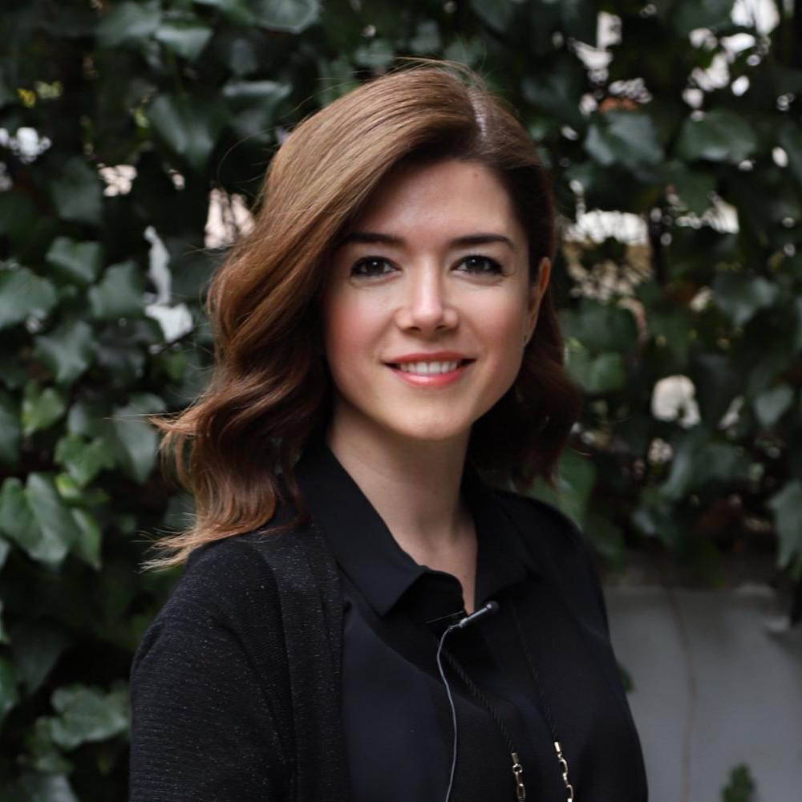
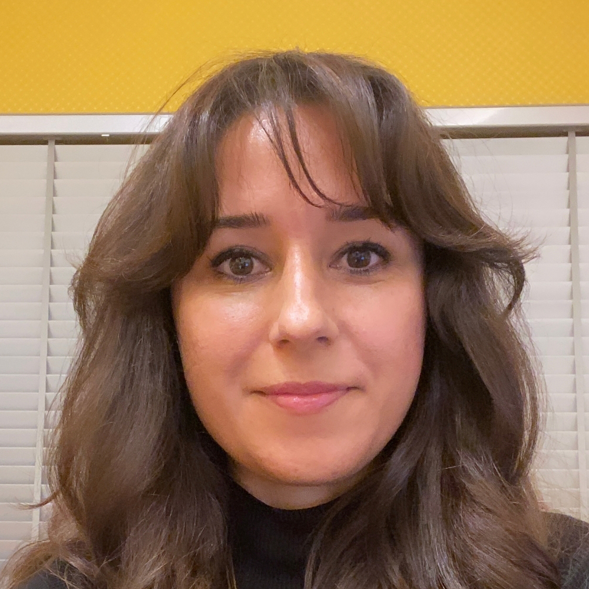

rabia-alga.php
Rabia Alga
Yüksek Mimar (UÜ & İTÜ) · ThetaHealing® & Silva Metodu Eğitmeni
Mobil cihazlardan girenlere özel hızlı Link-in-Bio arayüzü, bilgisayardan (PC) girenlere özel geniş masaüstü deneyimi ve kaynak/eğitim tıklama analitiği.

Yüksek Mimar (UÜ & İTÜ) · ThetaHealing® & Silva Metodu Eğitmeni

Endüstri Mühendisi (MBA) · ThetaHealing® & Sayıların Şifası Eğitmeni